사용자 기능 개발하기
카카오 로그인·Supabase 설정
사용자 기능 개발하기 - 카카오 로그인·Supabase 설정
얻어갈 것
- Kakao Developers와 Supabase Auth를 설정합니다.
- 로컬 개발 서버에서 카카오 로그인 테스트가 가능하도록 URL 설정까지 맞춥니다.
연결의 큰 그림
카카오 로그인을 하고 나면, Supabase는 그 결과를 받아 우리 서비스의 로그인 세션으로 바꿔주는 쪽입니다.
- Kakao OAuth: 카카오 계정으로 사용자를 확인하고, 동의항목을 처리합니다.
- Supabase Auth: 카카오가 확인한 사용자를 우리 서비스의 사용자와 세션으로 바꿉니다.
- 우리 서비스: Supabase가 만든 세션을 보고 로그인 상태와 사용자 기능을 처리합니다.
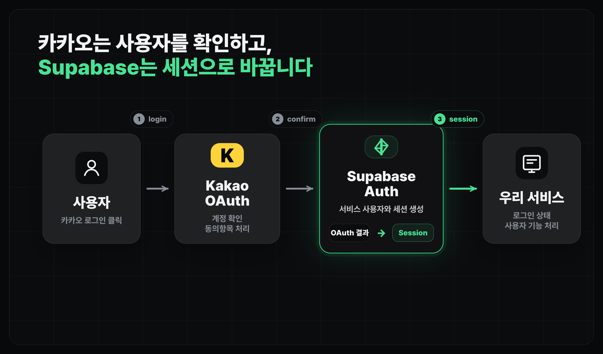
1. 카카오 로그인 켜기
먼저 Kakao Developers에서 앱을 선택한 뒤 제품 설정 > 카카오 로그인 > 일반으로 들어갑니다. 여기서 카카오 로그인 상태를 ON으로 바꿉니다.
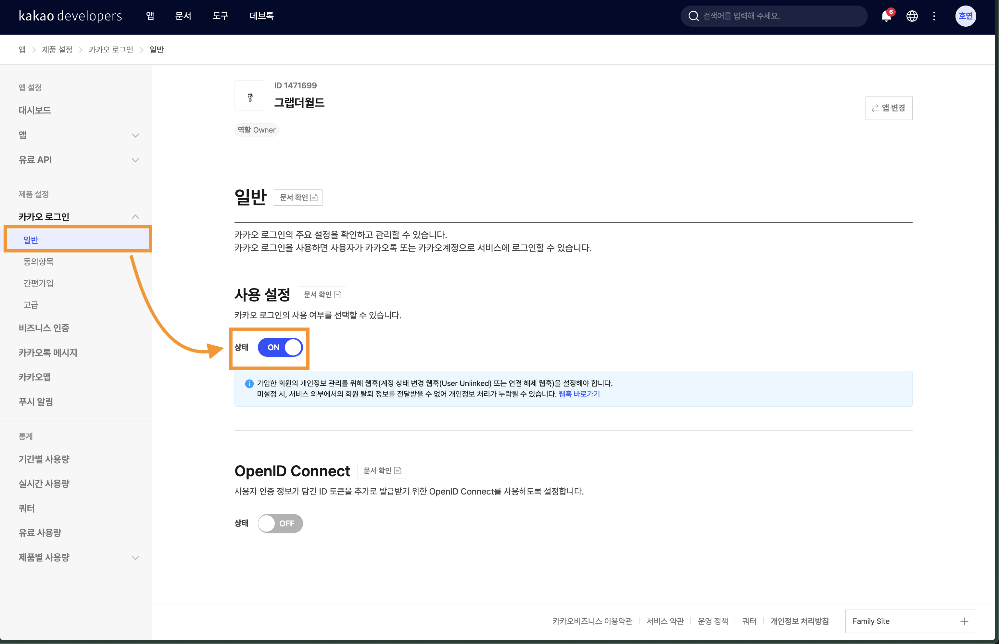
이 단계는 "우리 앱에서 카카오 로그인을 쓰겠다"는 선언입니다. 아직 Supabase와 연결된 것은 아니고, 카카오 쪽 제품 기능을 활성화한 상태라고 보면 됩니다.
2. 동의항목 정하기
다음은 카카오 로그인 > 동의항목입니다. 로그인할 때 사용자에게 어떤 정보를 받을지 정합니다.
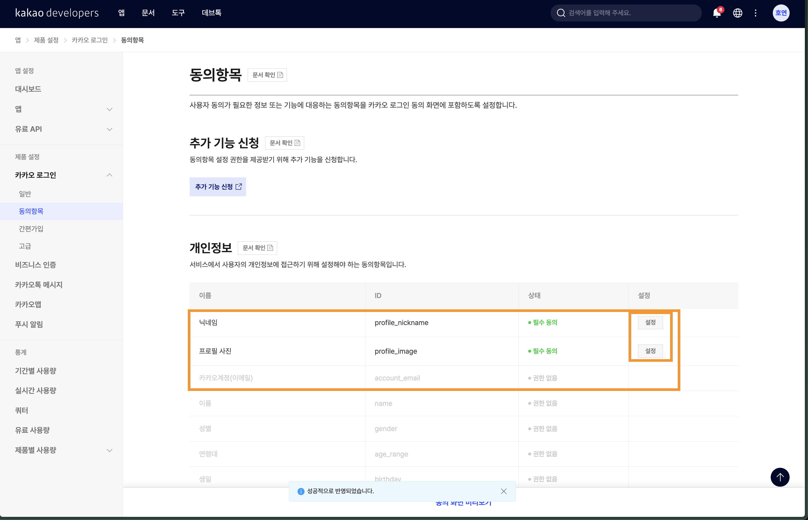
실습에서는 프로필 화면에 쓸 수 있는 기본 정보만 먼저 봅니다.
- 닉네임: 사용자 이름 대신 화면에 보여줄 수 있는 값입니다.
- 프로필 사진: 선택적으로 아바타나 사용자 메뉴에 쓸 수 있습니다.
- 이메일: 로그인 식별에 유용하지만, 카카오 쪽 추가 설정이 필요합니다
동의항목의 설정 버튼을 누르면 동의 단계를 고를 수 있습니다. 닉네임처럼 서비스에서 거의 항상 필요한 값은 필수 동의로 둡니다.
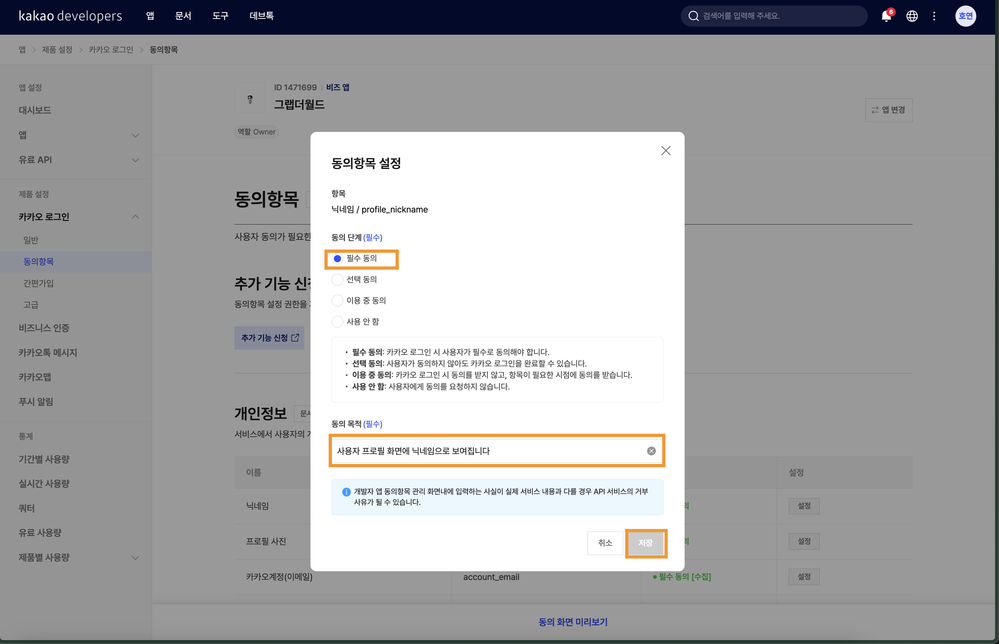
3. 이메일 동의를 위한 추가 기능 신청
이메일을 받으려면 카카오 쪽 추가 인증이 필요합니다. 앱 > 일반 > 비즈니스 정보 페이지에서 "개인 개발자 비즈 앱" 아래 "카카오비즈니스 통합 서비스 약관 동의"를 누르고 본인인증과 약관 동의를 진행하세요.
설정 페이지는 Kakao Developers 콘솔의 앱 설정 > 일반에서 열 수 있습니다. (앱 ID는 본인 앱에 맞게 바뀝니다.)
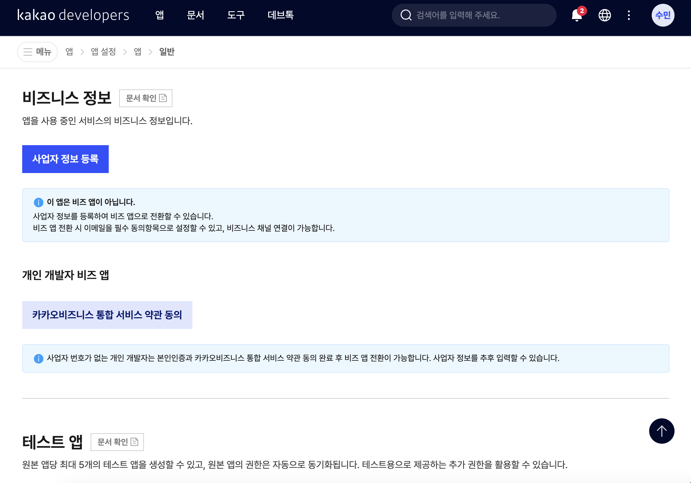
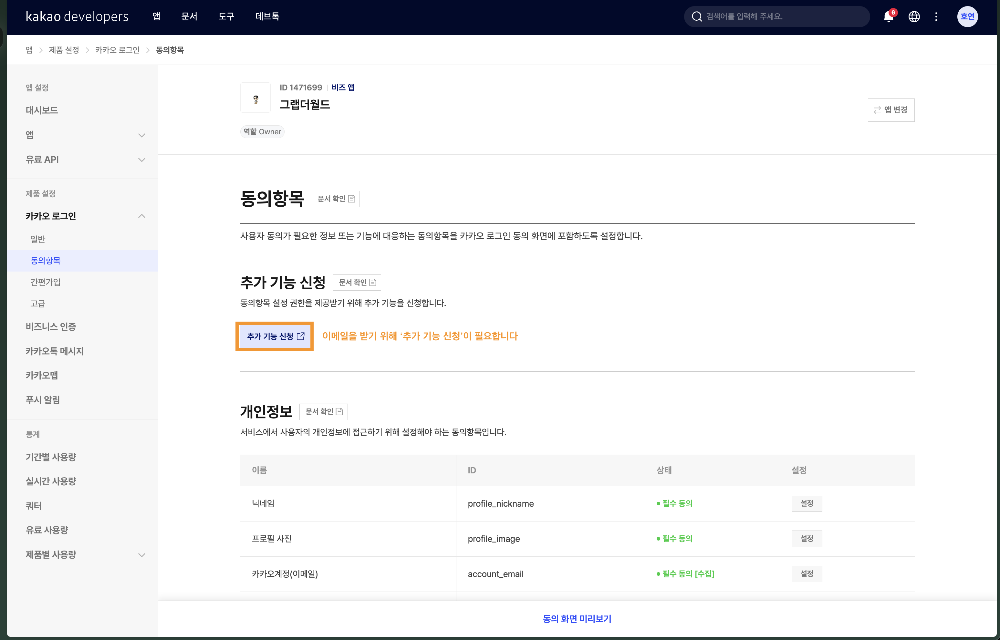
4. 비즈 앱 전환 확인하기
카카오 쪽에서 이메일 같은 항목을 쓰려면 앱을 비즈 앱으로 전환해야 하는 흐름이 나올 수 있습니다. 개인 개발자 비즈 앱 전환 화면에서는 목적을 고르고 저장합니다.
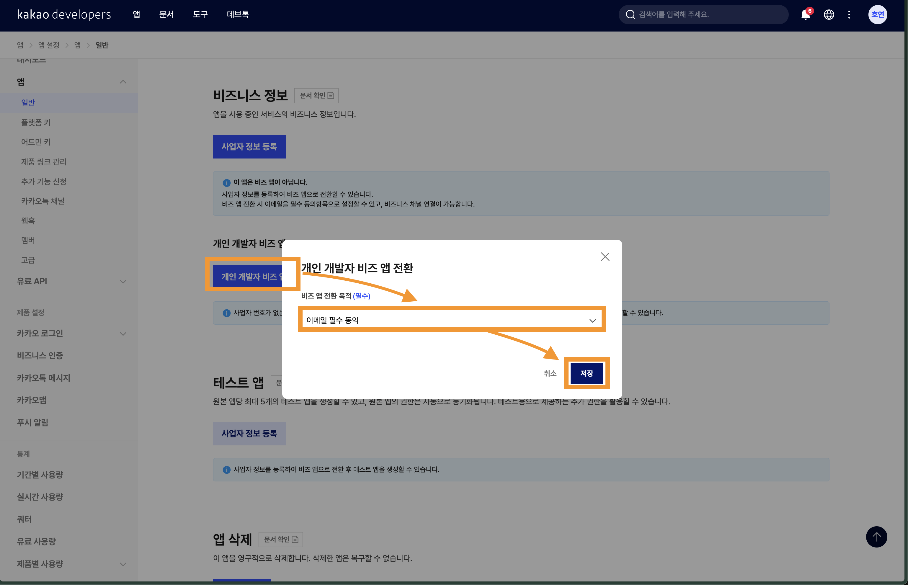
5. 이메일 동의하기
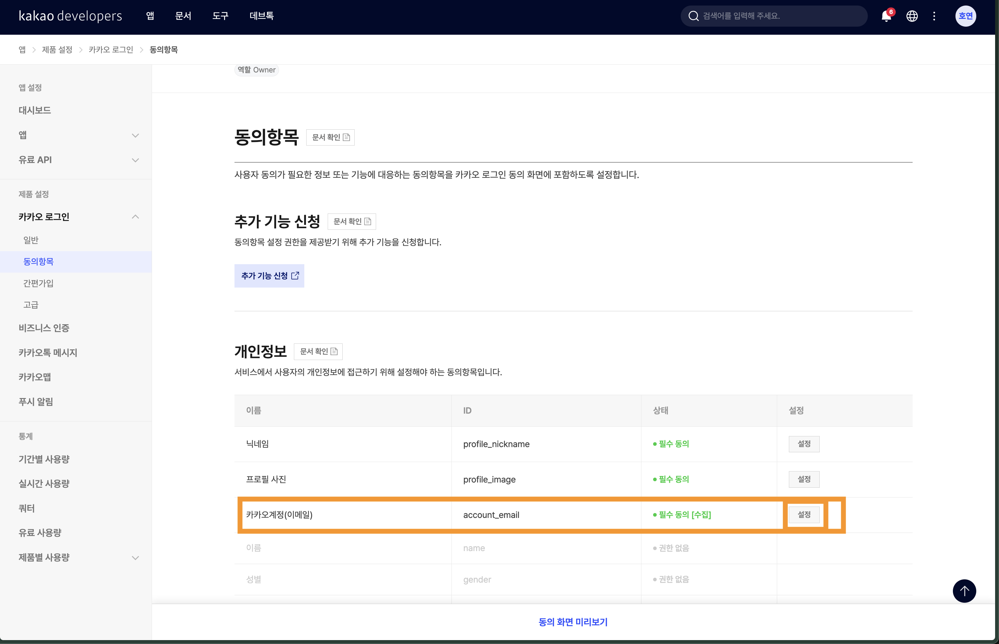
6. Supabase에서 Kakao provider 켜기
이제 Supabase로 이동합니다. Authentication > Sign In / Providers에서 Kakao provider를 찾습니다.
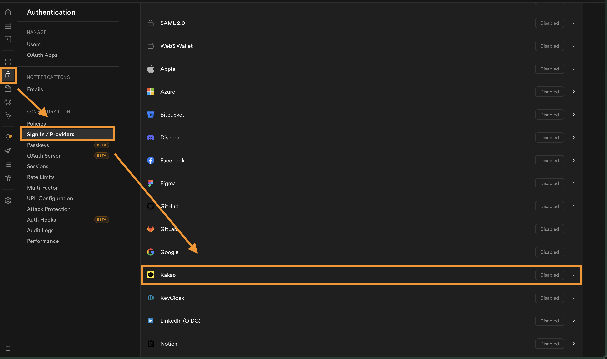
Kakao provider 설정 화면에서는 다음 값을 다룹니다.
- Kakao enabled: Supabase에서 카카오 로그인을 받을지 정합니다.
- REST API Key: Kakao Developers에서 복사한 REST API 키를 넣습니다. (8번에서 확인)
- Client Secret Code: Kakao Developers에서 발급한 Client Secret을 넣습니다. (8번에서 확인)
- Callback URL: Supabase가 제공하는 OAuth callback 주소입니다. 이 값을 Kakao Developers에 등록해야 합니다.
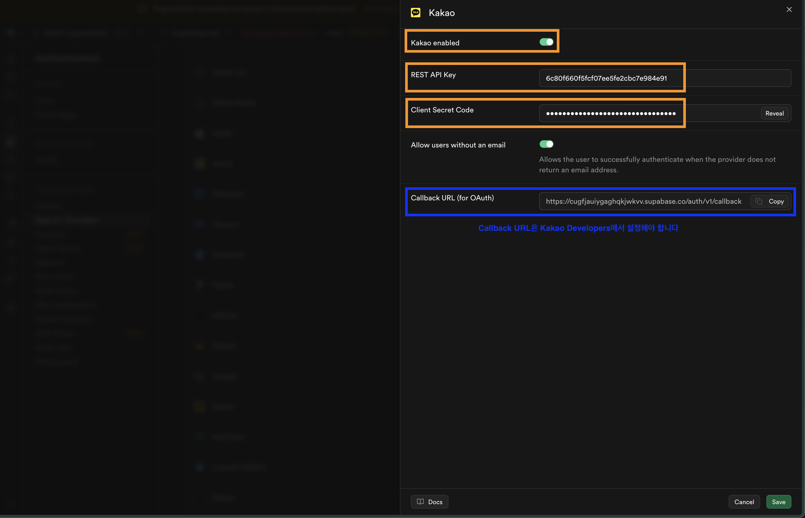
7. 카카오 REST API 키 확인하기
Kakao Developers의 앱 > 플랫폼 키에서 REST API 키를 확인합니다. Supabase의 Kakao provider에 넣는 값은 JavaScript 키가 아니라 REST API 키입니다.
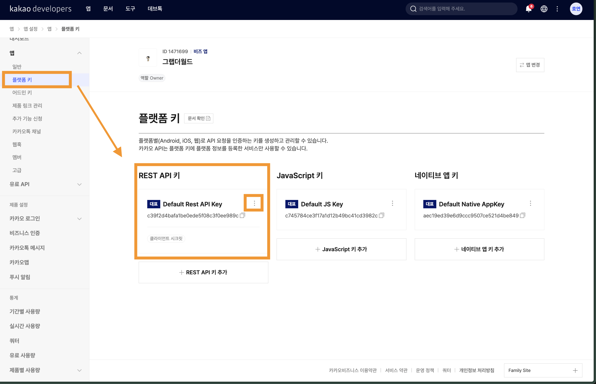
8. Callback URL 등록하기
Supabase Kakao provider 화면에 있는 Callback URL (for OAuth)을 복사한 뒤, Kakao Developers의 REST API 키 수정 화면에 있는 카카오 로그인 리다이렉트 URI에 넣습니다.
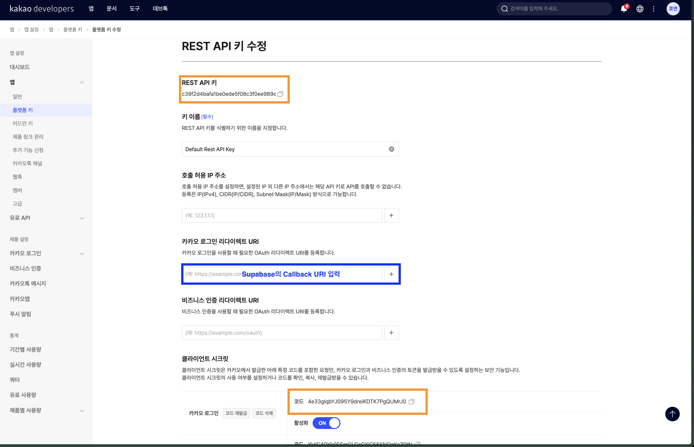
이 주소가 맞지 않으면 로그인은 카카오에서 시작되더라도 Supabase로 돌아오지 못합니다. OAuth 오류가 나면 가장 먼저 이 Callback URL이 양쪽에서 같은지 확인합니다.
9. Supabase URL 설정 맞추기
마지막으로 Supabase의 Authentication > URL Configuration을 확인합니다. 로컬에서 테스트할 때는 Site URL과 Redirect URLs가 개발 서버 주소를 허용해야 합니다.
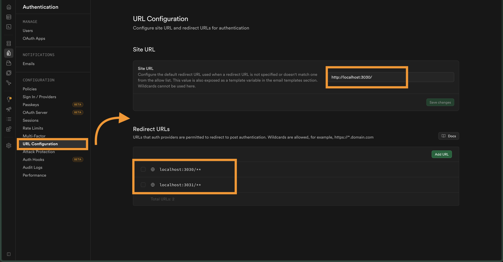
Site URL은 http://localhost:3030으로 넣어주고 Redirect URLs에 http://localhost:3030/**를 추가해줍니다.
설정 후 확인할 것
- Kakao Developers에서 카카오 로그인 상태가
ON인지 확인합니다. - 동의항목에서 닉네임, 프로필 사진, 필요하면 이메일이 원하는 동의 단계로 되어 있는지 확인합니다.
- Supabase Kakao provider가 enabled 상태인지 확인합니다.
- Supabase에는 Kakao REST API 키와 Client Secret을 넣었는지 확인합니다.
- Kakao Developers의 리다이렉트 URI에는 Supabase Callback URL을 넣었는지 확인합니다.
- Supabase URL Configuration에는 로컬 개발 서버 주소가 들어 있는지 확인합니다.